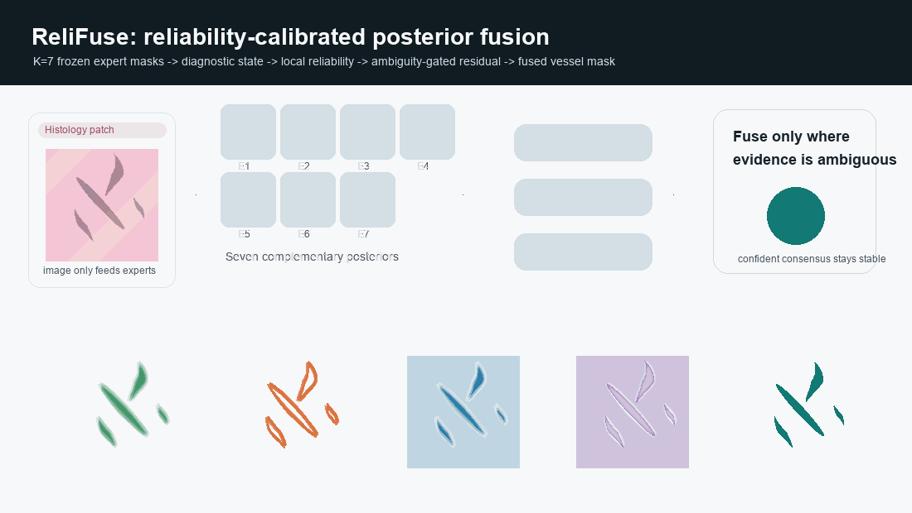
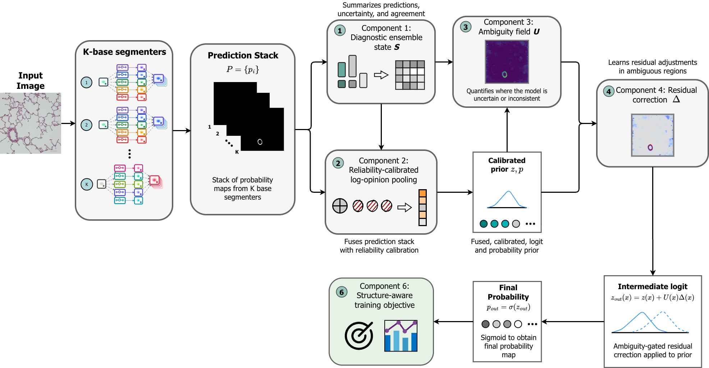
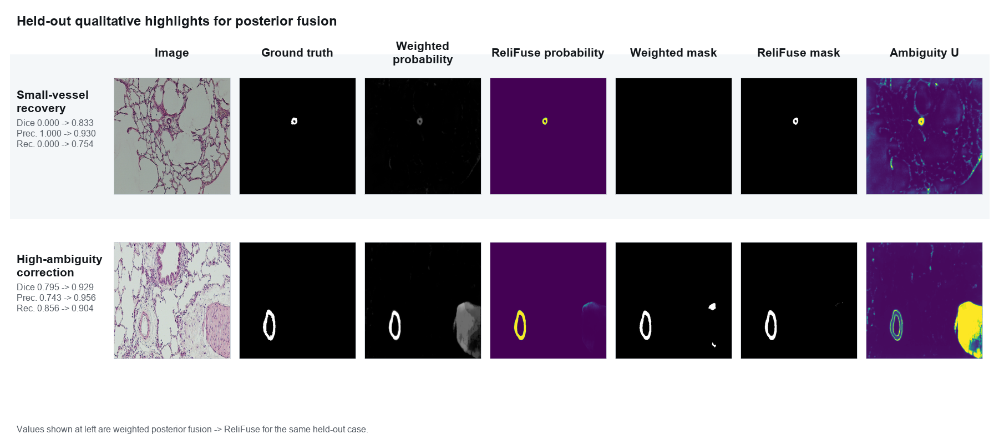
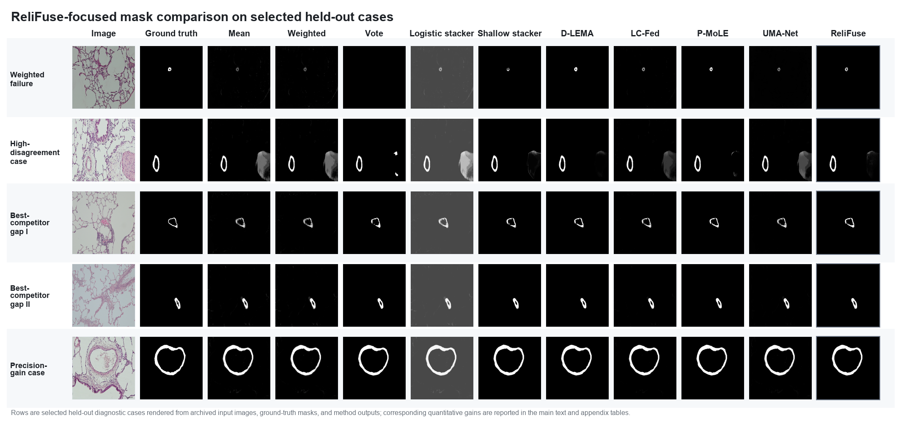

Diversity-aware expert bank
Select competent but non-redundant frozen models.
Histological Vessel Segmentation
A lightweight fusion head that combines frozen expert probability maps, estimates local reliability, and only edits ambiguous vessel regions.

Truong P. Le, Truong N. Nguyen, Vinh Le H. Tran, Tram T. Doan, Binh T. Nguyen, Son T. Huynh
University of Science, VNU-HCM. Public pulmonary histology benchmark: 517 development images and 92 held-out test images.
Core Idea
ReliFuse treats each frozen segmenter as an imperfect observer. It builds diagnostic ensemble-state features, anchors expert reliability with validation Dice priors, pools calibrated logits, and gates residual corrections by local ambiguity.
Select competent but non-redundant frozen models.
Summarize consensus, minority evidence, entropy, disagreement, and boundary risk.
Bias-correct expert logits and weight them by local trust.
Apply bounded edits where the ensemble is uncertain.
Process Demo
The animation shows seven synthetic expert masks moving through the main ReliFuse components. It visualizes relations among consensus, disagreement, reliability, residual correction, and the final mask.

Architecture
ReliFuse exposes prior probabilities, ambiguity, correction, reliability, calibration bias, and diagnostic state so the final posterior can be audited.

Held-out Evaluation
| Method | Dice ↑ | IoU ↑ | Precision ↑ | Recall ↑ |
|---|---|---|---|---|
| Weighted fusion | 0.9187 ± 0.0244 | 0.8505 ± 0.0414 | 0.9233 ± 0.0305 | 0.9152 ± 0.0365 |
| D-LEMA | 0.9225 ± 0.0210 | 0.8568 ± 0.0361 | 0.9193 ± 0.0328 | 0.9268 ± 0.0290 |
| LC-Fed | 0.9223 ± 0.0222 | 0.8565 ± 0.0379 | 0.9219 ± 0.0325 | 0.9239 ± 0.0316 |
| P-MoLE | 0.9222 ± 0.0210 | 0.8562 ± 0.0361 | 0.9145 ± 0.0318 | 0.9311 ± 0.0292 |
| ReliFuse | 0.9241 ± 0.0139 | 0.8591 ± 0.0241 | 0.9194 ± 0.0299 | 0.9297 ± 0.0188 |
Qualitative Evidence


Citation
@misc{le2026relifuse,
title = {ReliFuse: Reliability-Calibrated Posterior Fusion for Histological Vessel Segmentation},
author = {Le, Truong P. and Nguyen, Truong N. and Tran, Vinh Le H. and Doan, Tram T. and Nguyen, Binh T. and Huynh, Son T.},
year = {2026}
}